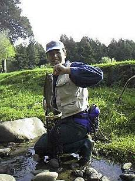
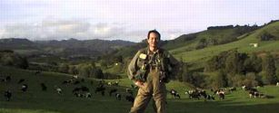
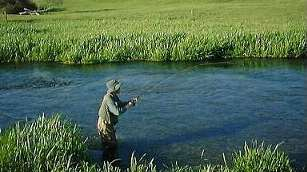

釣行日誌 ＮＺ編
１０月 山麓の川もスプリングクリークも、春爛漫
2000/10/08 (SUN)

Ｎ君と二人で山麓の川へ出撃。ぴくりともせず、午前中は敗退。午後、北斜面の川へ行き、攻めにくい牧場の区間を我慢して釣り上がる。５時過ぎ、それまで苦戦していたＮ君が、見えているレインボーを粘り勝ちでしとめる。
その後、ぽんぽんと２尾の虹鱒を釣って帰宅。ホイル焼き＋白ワインで盛り上がる。
2000/10/13 (FRI)
味を占めて、例の川へ。今日はすこし増水して濁りがある。やはり魚影は少ないが、先週と同じ場所で１尾釣る。その上流でもう１尾掛ける。しかし外れる。夕まづめ、ちびっこ虹鱒のライズの嵐となる。
2000/10/20 (FRI)
山麓南側の川へ。辛抱して釣り上がるが、ヒット無し。らしきライズが２回ほどあるがなぜか釣れない。フライが悪いのか、アプローチが悪いのか？
牧場のはずれまで行って、わずかな荒瀬を流したら黒い鼻先がドライフライを沈めた。すかさず合わせるとジャンプが始まり下流に走られて苦闘する。35cmのレインボー。
その上の瀬でも１尾掛けるが、フッキングが浅く、ばらした。
ばらした後は足が重い。延々と歩いて車に戻る。

疲れた。
2000/10/21 (SAT)
昼からＮ君とスプリングクリークへ。 瀬のちょっとしたたるみで、良型のレインボーをかける。

最初はこちらのペースであしらっていたものの、後半やはり下流へ走られて粘られる。なんとか取り込みに成功。この川にしては上出来の45cmであった。
夕まづめ、浅瀬で１尾かける。しかし、これも合わせが浅く、ばれた。夕焼けが美しい、初夏のワイカト地方。
2000/10/23 (MON)
やはり昼からＮ君と別のスプリングクリークへ。15分ほど歩いて下って釣り上がる。絶好の渓相で魚も元気良く、お気に入りの川となる。
釣行日誌ＮＺ編 目次へ
サイトマップ
ホームへ
お問い合わせ